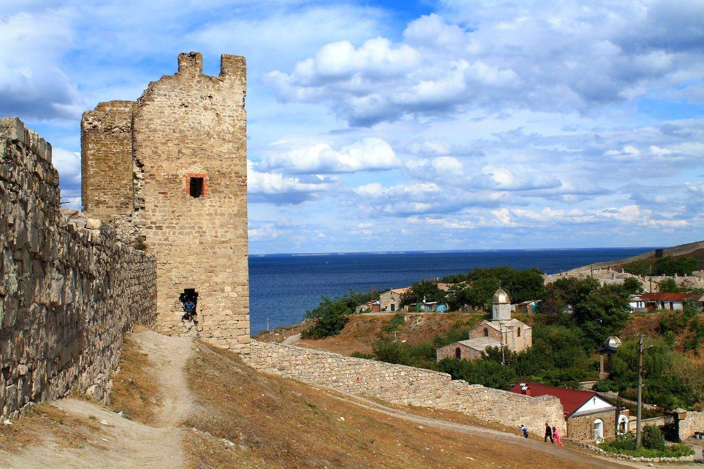

Курило Анна Олександрвіна
Дата та місце народження: 24 квітня 2003 року, м. Суми
Освіта: НТУУ "КПІ", м. Київ; Липоводолинський ліцей, Сумська обл.
Хоббі:
- Гра на музичних інструментах
- Біг
- Читання книг
Улюблені книги:
- "Гордість і упередження" Джейн Остін
- "Великий Гетсбі" Скотт Фіцджеральд
- "Той, що біжить лабіринтом" Джеймс Дешнер
Улюблене місце: Феодосія
Феодосія – курортне місто на березі Чорного моря у південно-східній частині Криму. У Феодосії багате історичне минуле – курорт має велику екскурсійну програму. Обов'язкові для відвідування архітектурні символи міста – Фортеця Кафа і Вежа часів правління генуезців, а музей стародавності Феодосії вважається одним із найстаріших у Європі. Місто нерозривно пов'язане з цілою плеядою відомих представників культури та мистецтва – Айвазовським, Гріном, Цвєтаєвою, Волошиним, Мухіною.
